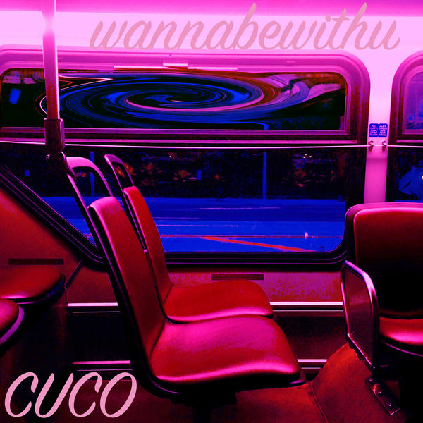
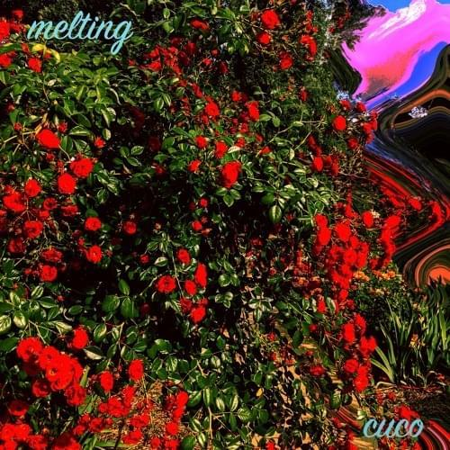
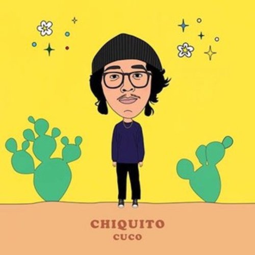
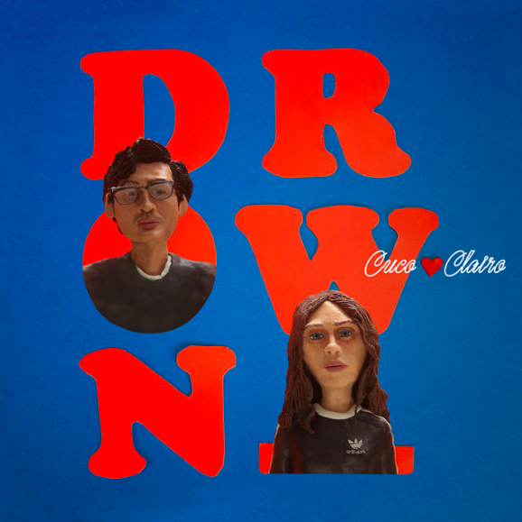
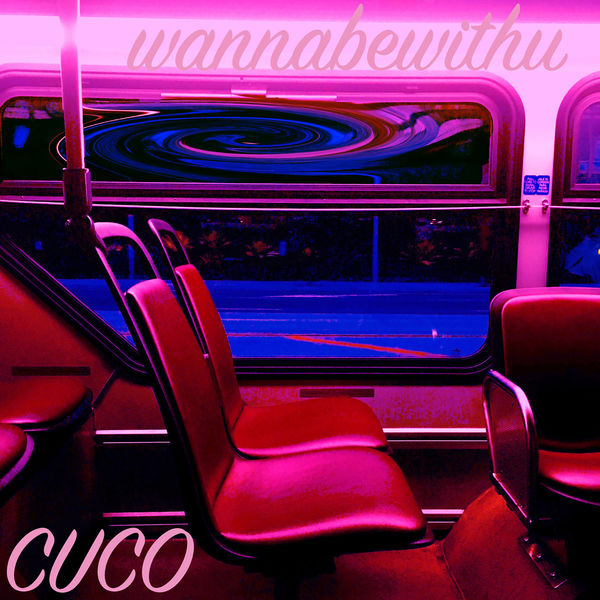
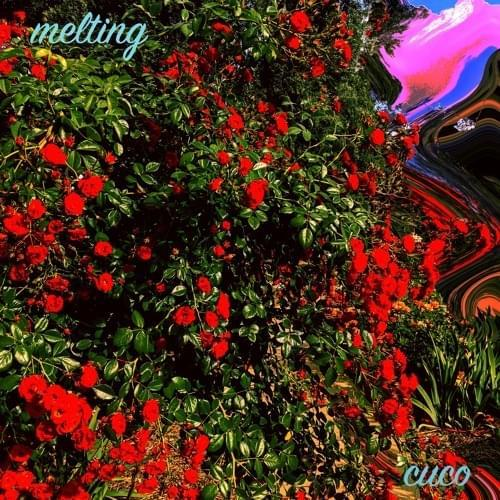
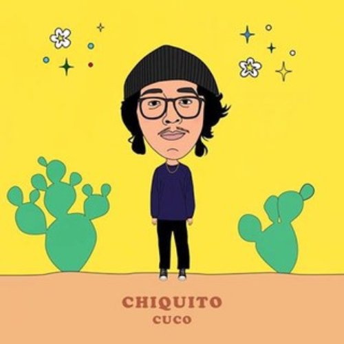
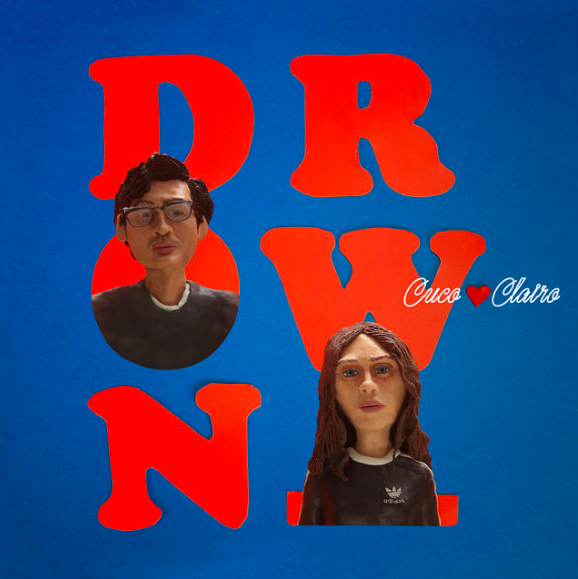

|  |  |
 |
|  |  |  |
 |
 |
 |
|  | |
|
|  |  | |
|
|
 |
A los 16 años, cuco produjo su primer mixtape nombrado "Wannabewithu" en el año 2016, después de aprender a usar el software "Ableton Live".
Inicio
En el año 2017 Cuco lanzó el sencillo "lo que siento" canción que pegó demasiado por su letra que es completamente emocional y juvenil.Lo que siento alcanzó más de 56 millones de reproducciones solo en Spotify.
Inicio
Al igual que el sencillo "lo que siento" en el año 2017 se lanzó el segundo álbum de larga duración titulado "Songs4u", en el cual se puede notar una mejora en la grabación.
InicioMelting es un cover de cuco en colaboración con otro artista independiente "el bau", melting fue interpretada originalmente por la cantante surcoreana "Hyuna". Cabe destacar que la versión cover de cuco fue mucho más conocida en la comunidad de habla española.
InicioEn el año 2018 cuco lanza un álbum pequeño o también conocido como EP, que lleva por nombre "Chiquito" en el que se destaca una alegría en la música y letras, eso sin perder ese estilo sintetizado único de el artista.
Inicio
En el 2019 cuco lanza su álbum más reciente titulado "Para mi", el cual es el primero en tener un sello de estudio discográfico. El álbum aborda problemas recientes que Cuco experimentó de primera mano.
Inicio
En el año 2019 se estrena la colaboración de cuco y el productor Dillon Francis, al escuchar este tema no se puede diferencia la parte de dillon.
Inicio
Esta es una de las canciones más recientes de cuco, pues fue lanzada en el año 2020, es un cover de los panchos quienes originalmente interpretan esta canción.
InicioEn agosto de 2018 se lanza la canción "Drown", que es una colaboración con Clairo una cantante estadounidense.
Inicio